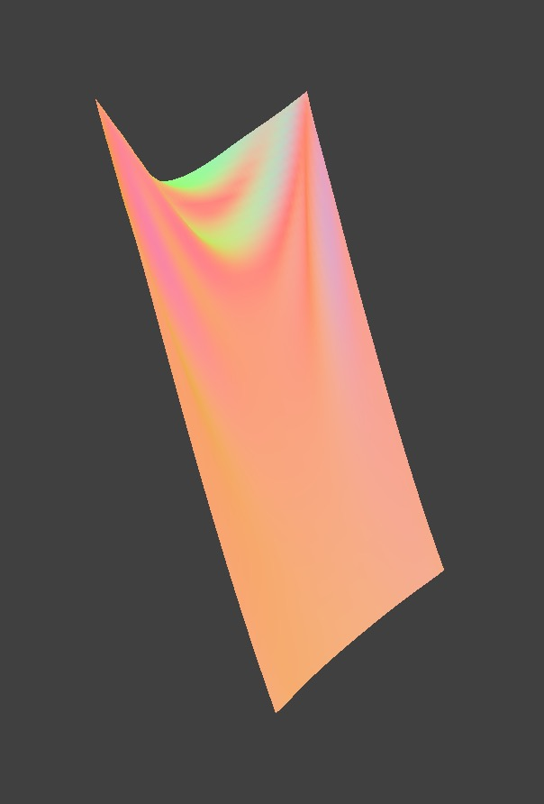

| Imaging with ALL Constraints | Imaging without Shearing Constraints | Imaging with only Shear Constraints |
|
P, modify the values of interest, and then resume by pressing P again. You can also restart the simulation at any time from the cloth's starting position by pressing R.
ks; how does the cloth behave from start to rest with a very low ks? A high ks?For low ks, the cloth falls faster and in a much more stable manner, and the cloth is also much more perturbed in the steady state(i.e. More wrinkled). For high ks, the cloth falls slower, and the cloth’s steady state position (as it finishes falling) is much less wrinkled.
density?For high density, the cloth falls faster and in a much more stable manner, and the cloth is also much more perturbed in the steady state(i.e. More wrinkled). For low density, the cloth falls slower, and the cloth’s steady state position (as it finishes falling) is much less wrinkled.
damping?For the highest damping, the cloth falls very slowly and never quite reaches the steady state. The cloth is also very unperturbed in the steady state(i.e. Less wrinkled). For low damping, the cloth looks very wrinkled, and the cloth oscillates many times across the vertical steady state position before reaching its steady state position, as the kinetic energy takes a while to dissipate(as it finishes falling). The finished state is also much more wrinkled, as the cloth is much more perturbed.
for higher ks, the cloth looks harder and stiffer. for higher density, the cloth looks wet and heavier, so it drags down. for high damp, the cloth doesn't have the energy to make extra moves like bouncing or swinging. It gets to the resting position in the most straightfoward way.
| High Damping | High Density | High Spring Constant |
|  |  |
|
| Low Damping | Low Density | Low Spring Constant |
ks = 5000 as well as with ks = 500 and ks = 50000. Describe the differences in the results.| Ks = 500 | Ks = 5000 | Ks = 50000 |
| Starting Positions of the Cloth | |
| Finishing Positions of the Cloth | |
density as well as ks and describe with words and screenshots how they affect the behavior of the cloth as it falls on itself.| High Density | High Spring Constant |
| Low Density | Low Spring Constant |
| Only Ambient | Only Diffuse |
| Only Specular | Entire Model |
/textures/.texture_2.png. Compare the two approaches and resulting renders in your own words. Compare how your the two shaders react to the sphere by changing the sphere mesh's coarseness by using -o 16 -a 16 and then -o 128 -a 128.| Bump Mapping on Cloth | Bump Mapping on Sphere |
| Displacement Mapping on Cloth | Displacement Mapping on Sphere |
| Bump: More Coarse, oa=16 | Bump: Less Coarse, oa=128 |
| Displacement More Coarse, oa=16 | Displacement Less Coarse, oa=128 |
| Mirror Shader on Cloth | Mirror Shader on Sphere |
| Toon Shading, Scene: Sphere + Cloth | Toon Shading, Cloth |

|

First, I want the cloth to show different color when I rotate the camera view. To do that, in texture sampling (a rainbow texture), I included camera direction in the input v_uv, which means rotating camera changes the uv input that I sample with. Then, the cloth is now a smooth rainbow cloth whose color shifts when I rotate the camera. To add some grainy and wavy effect, I used a texture map called Perlin noise which alters the normal. In addition to camera direction, the v_uv input to the sample texture is also dependent on the altered normal. The perlin noise texture is found here. https://medium.com/@sunnless/iridescent-shader-breakdown-c87ec5fe1e2a
Our additional techical features are shown above, where we implemented two custom shaders, the toon shader and the iridescent shader.